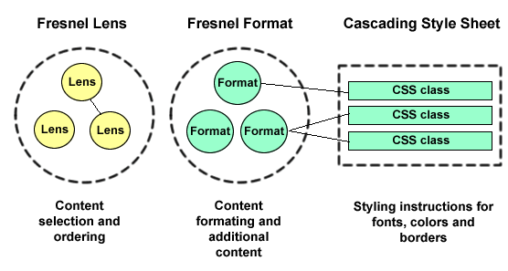
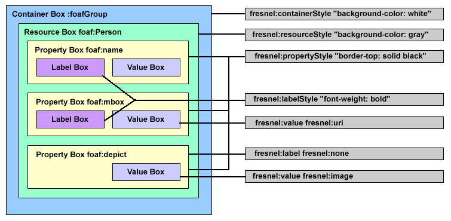

Fresnel is a simple, browser-independent vocabulary for specifying how to display RDF models.
Fresnel is a simple, browser-independent vocabulary for specifying how to display an RDF model [1] and how to style it using existing style languages such as CSS [2].
Displaying RDF in a human-friendly manner by way of an RDF display vocabulary is done differently in every application [5-11] [16-17] [19]. Recognizing the general need for displaying RDF and wanting to avoid reinventing the wheel with each new application, the authors jointly developed Fresnel as an extensible ontology of core RDF display concepts.
Fresnel's design goals are to create an ontology that is:
Fresnel's two foundational concepts are lenses and formats. Lenses define which properties of an RDF resource are displayed and how these properties are ordered. Fresnel formats determine how the selected properties are rendered by specifying RDF-specific formatting attributes and by providing hooks to CSS [2], which is used to specify fonts, colors, margins, borders, and other decorative elements.

Fresnel adheres to a strict separation between data selection and formatting. The Fresnel rendering process can be decomposed in three steps:
Possible output formats include:
The choice of what output format to support, and how to interpret the formatted tree produced by the second step to produce the actual output (i.e., the third step), is a prerogative of each application. Fresnel expresses RDF presentation knowledge in a declarative way; Fresnel applications should take all formatting information into account, but are free to interpret and adapt them in a way that is appropriate w.r.t their fundamental representation paradigm (e.g. nested box-based textual representation à la XHTML+CSS, node-link diagram, etc.). In other words, Fresnel does not dictate how to transform the tree resulting from the formatting step into an actual target document of the chosen output format.
Fresnel takes an ontology-centric view on RDF models. RDF models are described in terms of resources which are instances of classes. Instances have properties, and properties have property values.
The following example shows how Fresnel can be used to render FOAF [4] persons. All examples use the Notation 3 syntax for RDF.
@prefix fresnel: <http://www.w3.org/2004/09/fresnel#> .
@prefix foaf: <http://xmlns.com/foaf/0.1/> .
@prefix rdf: <http://www.w3.org/1999/02/22-rdf-syntax-ns#> .
@prefix xsd: <http://www.w3.org/2001/XMLSchema#> .
@prefix : <#>
# -----------------------------------------------
# 1.Fresnel Lenses for FOAF Person
# -----------------------------------------------
:foafPersonDefaultLens rdf:type fresnel:Lens ;
fresnel:purpose fresnel:defaultLens ;
fresnel:classLensDomain foaf:Person ;
fresnel:group :foafGroup ;
fresnel:showProperties ( foaf:name
foaf:surname
foaf:depiction ) .
:knowsLens rdf:type fresnel:Lens ;
fresnel:classLensDomain foaf:Person ;
fresnel:group :foafGroup ;
fresnel:showProperties ( foaf:name
foaf:surname
foaf:mbox
[ rdf:type fresnel:PropertyDescription ;
fresnel:property foaf:knows ;
fresnel:sublens :foafPersonDefaultLens ] ) .
# -----------------------------------------------
# 2. Fresnel Formats
# -----------------------------------------------
:foafGroup rdf:type fresnel:Group ;
fresnel:stylesheetLink <http://www.example.org/example.css> .
:depictFormat rdf:type fresnel:Format ;
fresnel:propertyFormatDomain foaf:depiction ;
fresnel:label fresnel:none ;
fresnel:value fresnel:image ;
fresnel:valueStyle "imageWithThickBorder"^^fresnel:styleClass ;
fresnel:group :foafGroup .
:urlFormat rdf:type fresnel:Format ;
fresnel:propertyFormatDomain foaf:homepage ;
fresnel:propertyFormatDomain foaf:mbox ;
fresnel:value fresnel:externalLink ;
fresnel:labelStyle "basicLabel"^^fresnel:styleClass ;
fresnel:valueStyle "basicUrl"^^fresnel:styleClass ;
fresnel:group :foafGroup .
This Fresnel example declares two lenses which apply to instances of class foaf:Person as specified by property fresnel:lensDomain. The first lens defines a view on foaf:Person containing three properties: foaf:name, foaf:surname, and foaf:depiction. A Fresnel browser would start with displaying this lens because it is marked with the purpose fresnel:defaultLens. The second lens displays a person together with all other persons she knows. The fresnel:sublens property specifies that the :foafPersonDefaultLens should be used to display known people.
The second part of the stylesheet contains formatting declarations. The first declaration is a reference to an external CSS stylesheet. :depictFormat specifies that all values of property foaf:depiction should be displayed as images with solid borders. :urlFormat specifies that values of foaf:homepage and foaf:mbox should be rendered as external links using CSS styling instructions associated with CSS classes basicLabel and basicUri (defined in the external stylesheet referenced earlier).
In order to make it easier for developers to implement, Fresnel is modularized along two axes:
Selectors are used within Fresnel to specify which RDF instances and properties should be displayed or formatted. Fresnel includes three different selector languages offering increasing expressiveness:
Simple selectors are the easiest but least expressive way to point at elements of RDF models. A simple selector is a URI reference represented as a QName (qualified name), which is interpreted as an instance, a class, or a property depending on the context (lens domain selector, format domain selector, property selector).
:foafPersonLens rdf:type fresnel:Lens ;
fresnel:classLensDomain foaf:Person .
Selectors can also be specified using the Fresnel Selector Language (FSL) [13]. FSL is strongly inspired by XPath, and was created by adapting the XPath syntax and concepts to RDF's graph-based model and by deriving pieces from different RDFPath proposals.
Example: the following format applies only to persons that are exactly 30 years old.
:foafPersonFormat rdf:type fresnel:Format ;
fresnel:instanceFormatDomain "foaf:Person[ex:age/'30']"^^fresnel:fslSelector.
Note that when considered as literal values, simple selectors are also valid FSL expressions (see below and [13]).
In addition to FSL, some browsers might also want to take advantage of the full expressive power of SPARQL [12].
:foafPersonFormat rdf:type fresnel:Format ;
fresnel:instanceFormatDomain "SELECT ?person
WHERE { ?person rdf:type foaf:Person .
?person foo:age ?age . FILTER ?age < 30 }"^^fresnel:sparqlSelector .
SPARQL queries used within Fresnel must always return exactly one node set, meaning that only one variable is allowed in the query's SELECT clause.
The shared namespace of all Fresnel vocabulary modules is :
http://www.w3.org/2004/09/fresnel#
Fresnel lenses specify which properties of an instance (i.e., a resource) are shown. For example, a 'short summary' lens for FOAF persons might display the name and the email address of a person. The result of applying a lens or a group of lenses to an RDF graph is an ordered tree of RDF nodes. This tree doesn't contain any formatting information yet. Formatting instructions are added as a seperate step using Fresnel formats.
The core lens vocabulary is used to define:
A lens domain is declared with property fresnel:instanceLensDomain and specifies the set of instances to which a lens applies. The value of fresnel:instanceLensDomain can be a selector expressed with any of the three languages introduced above (simple selectors, FSL expressions, SPARQL queries).
When defining a lens domain, a simple selector can either be interpreted in two ways:
The simple selector expression being a URI reference, it does not by itself give any indication of how the selector should be interpreted. Two different Fresnel lens domain properties are therefore used to unambiguously indicate how the selector should be interpreted:
# a lens applying to resource http://example.org#foo
:exLens rdf:type fresnel:Lens ;
fresnel:instanceLensDomain <http://example.org#foo> .
# a lens applying to all instances of class foaf:Person
:foafPersonLens rdf:type fresnel:Lens ;
fresnel:classLensDomain foaf:Person .
# a lens applying to resource foaf:Person (defined in the FOAF RDF Schema)
:foafPersonClassLens rdf:type fresnel:Lens ;
fresnel:instanceLensDomain foaf:Person .
Selectors expressed with FSL or SPARQL are always used in conjunction with property fresnel:instanceLensDomain and never with property fresnel:classLensDomain, as the above ambiguity problem does not arise in the context of FSL- and SPARQL-based selectors.
# a lens applying to resource http://example.org#foo
:exLens rdf:type fresnel:Lens ;
fresnel:instanceLensDomain "*[uri(.) = 'http://example.org#foo']"^^fresnel:fslSelector .
# a lens applying to all instances of class foaf:Person that are younger than 12
:childrenLens rdf:type fresnel:Lens ;
fresnel:instanceLensDomain "foaf:Person[ex:age/text() < 12]"^^fresnel:fslSelector .
# a lens applying to all instances of class foaf:Person that know at least 5 other persons
:knowsManyPersonLens rdf:type fresnel:Lens ;
fresnel:instanceLensDomain "foaf:Person[count(foaf:knows/foaf:Person) >= 5]"^^fresnel:fslSelector .
# a lens applying to all resources (no matter what class they belong to)
# that have an ex:rating property equal to 100
:exLens2 rdf:type fresnel:Lens ;
fresnel:instanceLensDomain "*[ex:rating/'100']"^^fresnel:fslSelector .
FSL expressions take the form of paths in the RDF graph. The FSL specification as well as many examples are available at [13]. More information about SPARQL is also available [12].
Lenses use fresnel:showProperties and fresnel:hideProperties to define which properties are displayed. The value of showProperties and hideProperties can be either a single property selector or an ordered list of property selectors. These selectors can be simple selectors (RDF property URIs), or FSL expressions returning RDF properties (i.e. ending by an arc location step, see [13]).
Example: the following lens shows property foaf:name first, followed by properties foaf:mbox and foaf:homepage.
:foafPersonShortLens rdf:type fresnel:Lens ;
fresnel:classLensDomain foaf:Person ;
fresnel:showProperties ( foaf:name
foaf:mbox
foaf:homepage ) .
Example: the following lens shows property foaf:name first, followed by the foaf:name property of resources known by the resource selected by the lens.
:foafPersonShortLens rdf:type fresnel:Lens ;
fresnel:classLensDomain foaf:Person ;
fresnel:showProperties ( foaf:name
"foaf:knows/*/foaf:name"^^fresnel:fslSelector ) .
RDF's flexible data model allows arbitrary properties from any vocabulary to be associated with resources. Lens authors cannot expect to know in advance all properties that instances to be displayed might use. This case can be handled using fresnel:allProperties. fresnel:allProperties is a placeholder for the names of all properties of the current instance that haven't already been explicitly named in the property list.
Example: The following lens shows the foaf:name property first, followed by the foaf:mbox and foaf:homepage properties. Afterwards, it displays all other properties of the current person but hides the dc:creator and dc:date properties.
:foafPersonShortLens rdf:type fresnel:Lens ;
fresnel:classLensDomain foaf:Person ;
fresnel:showProperties ( foaf:name
foaf:mbox
foaf:homepage
fresnel:allProperties );
fresnel:hideProperties ( dc:creator
dc:date ) .
The values of rdf:List, rdf:Bag, rdf:Seq, or rdf:Alt can be displayed using the fresnel:member pseudo-property. fresnel:member is a placeholder for rdf:_1, rdf:_2, ... and for the members of a rdf:List.
The following example shows how fresnel:member is used to display all members of a rdf:Bag.
:bagLens rdf:type fresnel:Lens ;
fresnel:classLensDomain rdf:Bag ;
fresnel:showProperties fresnel:member .
The idea behind the lens purpose vocabulary is to help the browser decide which lens to use in situations where more than one lens could apply, causing a conflict. Lens purposes depend on the application domain and the browser's display paradigm. Therefore, Fresnel provides an open interface for using domain- or browser-specific purposes and defines only two general purposes that might be useful across all browsers.
The fresnel:defaultLens purpose is intended to indicate a default lens for a specific class. Browsers might decide to show a lens with purpose fresnel:defaultLens in situations where there are several applicable lenses.
The fresnel:labelLens purpose indicates a lens that provides a short, human-readable label for an instance of a specific class. Browsers in need of labelling an instance (see fresnel:value) should implement the following behavior:
Purposes are specified using the fresnel:purpose property.
Example: a fresnel:labelLens purpose for foaf:Person displaying only the person's name.
:foafPersonLabelLens rdf:type fresnel:Lens ;
fresnel:purpose fresnel:labelLens ;
fresnel:classLensDomain foaf:Person ;
fresnel:showProperties foaf:name .
If there is more than one lens applicable to an instance and the browser has not specified a particular one to use, through whatever mechanism it might use to do so, conflicts between lenses are resolved by implementing the following lens selection policy (each step refines the set of lenses to be considered, keeping only the most specific lenses):
At this point, the set of applicable lenses is made of lenses that have all of their domains defined either as classLensDomain or instanceLensDomain. If the domain is a classLensDomain, selectors are necessarily simple selectors. If the domain is an instanceLensDomain, selectors are either all SPARQL queries or all FSL expressions, or all simple selectors. In all cases, if the set contains more than one lens, the following steps are used to select the lens to apply:
It is often beneficial to display instances together with related instances. For example, a browser might display a person together with her publications, projects or friends. This is accomplished by relating a lens to sublenses using property fresnel:sublens.
Example: the following lens uses a sublens to display a person together with her friends. It also specifies that the :foafPersonDefaultLens must be used to display this person's friends (i.e., foaf:knows property values).
:knowsLens rdf:type fresnel:Lens ;
fresnel:classLensDomain foaf:Person ;
fresnel:showProperties ( foaf:name
foaf:surname
foaf:mbox
[ rdf:type fresnel:PropertyDescription ;
fresnel:property foaf:knows ;
fresnel:sublens :foafPersonDefaultLens ] ) .
For handling properties whose values might belong to various classes, it is possible to specify multiple sublenses. The appropriate lens is chosen based on the domain of lenses declared as possible sublenses.
Example: the ex:activity property might contain a person's projects and hobbies. The following lens specifies that ex:activity values can be displayed either with lens :projectDefaultLens or lens :hobbyDefaultLens. What lens gets chosen depends on each value's type.
:activitiesLens rdf:type fresnel:Lens ;
fresnel:classLensDomain foaf:Person ;
fresnel:showProperties ( foaf:name
[ fresnel:property ex:activity ;
fresnel:sublens :projectDefaultLens ;
fresnel:sublens :hobbyDefaultLens ] ) .
:projectDefaultLens rdf:type fresnel:Lens ;
fresnel:classLensDomain ex:Project.
:hobbyDefaultLens rdf:type fresnel:Lens ;
fresnel:classLensDomain ex:Hobby.
Recursive sublens relationships can cause infinite loops. This problem can be addressed by specifying a maximum recursion depth.
Example: the following lens will display a hierarchy of foaf:knows relationships with a maximum path length of 5.
:knowsHierarchyLens rdf:type fresnel:Lens ;
fresnel:classLensDomain foaf:Person ;
fresnel:showProperties ( foaf:name
[ rdf:type fresnel:PropertyDescription ;
fresnel:property foaf:knows ;
fresnel:sublens :knowsHierarchyLens ;
fresnel:depth "5"^^xsd:nonNegativeInteger ] ) .
Using the fresnel:use property together with fresnel:sublens specifies a specific fresnel:Group of lenses and formats which should be used to render the sublens. This allows the usage of multiple fresnel:Groups for rendering different parts of the output. An example of how multiple groups are used to display the content of a sublens as a table is found here.
:foafPersonDefaultLens rdf:type fresnel:Lens ;
fresnel:classLensDomain foaf:Person ;
fresnel:showProperties ( foaf:name
foaf:surname
[ rdf:type fresnel:PropertyDescription ;
fresnel:property foaf:knows ;
fresnel:sublens :friendsLens ;
fresnel:use :tableGroup ]
) .
Fresnel lenses specify what information is displayed. The format vocabulary is used to specify how information is displayed. The format vocabulary also provides a bridge between RDF and styling languages such as CSS [2] and the styling part of SVG [3], which are used to specify styling attributes like colors, fonts and borders through external stylesheets.
The core format vocabulary is used to format RDF properties by defining:
Formats are usually grouped together using a Fresnel group. See Section 4 for details about Fresnel groups.
Formats for RDF properties and instances are defined by a fresnel:Format.
The fresnel:propertyFormatDomain property specifies the set of properties to which a format is applicable. A format can have more than one format domain.
Some use cases for formatting properties are:
Example: The following format applies to the foaf:depiction property:
:depictFormat rdf:type fresnel:Format ;
fresnel:propertyFormatDomain foaf:depiction .
The value of a fresnel:propertyFormatDomain property can be an FSL expression returning properties (i.e. whose last step is an arc location step, see [13]).
In a similar way to lens domains, fresnel:classFormatDomain or fresnel:instanceFormatDomain are used to apply formats to instances identified either by their class or by other constraints. FSL expressions can be used as values of fresnel:instanceFormatDomain.
Some use cases for formatting instances are:
Example: draw a border around the area used to display instances of the class foaf:Person, by combining a class format with the fresnel:resourceStyle property.
:nameFormat rdf:type fresnel:Format ;
fresnel:classFormatDomain foaf:Person ;
fresnel:resourceStyle "withBorder"^^fresnel:styleClass .
Example: Display all persons that are younger than 21 using a special color (uses an FSL path expression).
:nameFormat rdf:type fresnel:Format ;
fresnel:instanceFormatDomain "foaf:Person[foaf:age/text() < 21]"^^fresnel:fslSelector ;
fresnel:resourceStyle "greenBackground"^^fresnel:styleClass .
Explicitly linking a Lens and a Format
Besides the loose coupling of lenses and formats through format domains, it is also possible to explicitly link a lens and a format with fresnel:use as shown in the example below.
:foafPersonLabelLens fresnel:showProperties (
foaf:name [ rdf:type fresnel:PropertyDescription ;
fresnel:property foaf:mbox ;
fresnel:use :mboxFormat ]
) .
:mboxFormat rdf:type fresnel:Format ;
fresnel:valueFormat [fresnel:contentBefore "(" ;
fresnel:contentAfter ")" ] .
Fresnel's default behavior for labelling properties is to use the property's rdfs:label as defined by the corresponding RDF schema. If there is no rdfs:label for a property type then the property's URI is displayed instead. It is possible to customize this default behavior using fresnel:label.
fresnel:label is used to define whether a property label is displayed (fresnel:show, the default) or not (fresnel:none). A literal as the value of fresnel:label will be interpreted as a custom label for the property.
Example: do not show the label of the foaf:depiction property:
:depictFormat rdf:type fresnel:Format ;
fresnel:propertyFormatDomain foaf:depiction ;
fresnel:label fresnel:none .
Example: use a custom label for property foaf:knows:
:knowsFormat rdf:type fresnel:Format ;
fresnel:propertyFormatDomain foaf:knows ;
fresnel:label "This person knows the following people: "^^xsd:string .
Note: fresnel:label requires a fresnel:propertyFormatDomain to be associated to the fresnel:Format.
The default behavior for displaying property values is:
This default behaviour can be overridden using property fresnel:value property, which specifies that all values of a property should be displayed:
Example: display values of the foaf:depiction property as images.
:depictFormat rdf:type fresnel:Format ;
fresnel:propertyFormatDomain foaf:depiction ;
fresnel:value fresnel:image .
Example: display values of the foaf:homepage property as external links.
:knowsFormat rdf:type fresnel:Format ;
fresnel:propertyFormatDomain foaf:homepage ;
fresnel:value fresnel:externalLink .
Example: display values of the foaf:mbox property as URIs.
:knowsFormat rdf:type fresnel:Format ;
fresnel:propertyFormatDomain foaf:mbox ;
fresnel:value fresnel:uri .
Note: fresnel:value requires a fresnel:propertyFormatDomain to be associated to the fresnel:Format.
In the case that the default behaviour is overridden, browsers might want to give the user the option to switch back to the default behaviour or to manually select the lens which he likes to use.
If there is more than one format applicable to an instance and the browser has not specified a particular one to use, through whatever mechanism it might use to do so, conflicts between formats are resolved by implementing the following format selection policy (each step refines the set of formats to be considered, keeping only the most specific formats):
At this point, the set of applicable formats is made of formats that have all of their domains defined either as classFormatDomain or instanceFormatDomain. If the domain is a classFormatDomain, selectors are necessarily simple selectors. If the domain is an instanceFormatDomain, selectors are either all FSL expressions, or all simple selectors. In all cases, if the set contains more than one format, the following steps are used to select the format to apply:
Fresnel relies on external CSS [2] stylesheets for defining colors, margins, fonts, borders, and other decorative elements. Stylesheets can also contain SVG [3] styling instructions such as strokes and brushes, that could typically be used by visual tools such as IsaViz [7] which represents RDF models as node-link diagrams.
Fresnel Abstract Box Model
Colors, margins, fonts and borders are defined as styling rules in stylesheets. The selectors (left-hand side) of these rules are standard CSS class names, which can be referred to from Fresnel by associating them with elements of the Fresnel abstract box model. This box model is a logical abstraction over different display paradigms RDF browsers might use, based on the RDF abstract syntax. The box model is interpreted depending on the display paradigm. E.g. when considering node-link diagrams like in IsaViz, the property box is interpreted as an arc, which can be styled using the SVG [3] brush styling instructions. In XHTML/CSS-based, text-oriented browsers like LongWell [6], it is interpreted as a rectangular shape.
The following table lists the various elements defined by the abstract box model. These elements all represent abstract regions of the representation space that Fresnel implementations must instantiate. How these abstract elements map to actual elements of the representation is browser-dependant and is to be decided by each browser implementor's. The only requirement is that the constraints expressed in the following table are met.
| Abstract Box Model Element | Description |
|---|---|
| Resource Box | The resource box is a region that surrounds all properties of a single resource. Usage example: specifying a border around the region that surrounds all properties of an instance. |
| Property Box | The property box is a region that surrounds the area used to display a single property. Usage example: Specifying the background color of the whole area that represents a property. |
| Label Box | The label box contains the label of a property. |
| Value Box | The value box contains one property value. If the property value is displayed using a sublens, the value box will contain the resource box associated with the value. |
| Container Box | The container box is not part of core but of the extended format vocabulary. It is listed here only for the sake of completeness. The container box surrounds all instances that are currently displayed. Usage example: Specifying the background color of the whole representation (e.g. of an HTML page, or SVG diagram). A container box contains a set of resource boxes. |
Example Instantiation of the Box Model
The following figure gives an example instantiation of the abstract box model, as might define a browser whose fundamental representation/layout paradigm would be based on nested boxes. Different instantiations are possible.
Associating CSS Styling Rules with Elements of the Box Model
The CSS instructions found in a styling rule of an external stylesheet can be applied to elements of the box model by associating the CSS class name that defines the selector of this rule with the element of the box model. This association is based on the definition of styling hooks that can be declared using the following Fresnel properties.
| Styling Hook | Applicable to |
|---|---|
| fresnel:resourceStyle | fresnel:Group instances, class formats and instance formats (see Formatting Instances ) |
| fresnel:propertyStyle | fresnel:Format and fresnel:Group instances (see Format Domain) |
| fresnel:labelStyle | fresnel:Format and fresnel:Group instances |
| fresnel:valueStyle | fresnel:Format and fresnel:Group instances |
| fresnel:containerStyle | The container box is not part of Fresnel Core but of the Extended Format Vocabulary. It is listed here only for the sake of completeness. fresnel:Group instances (see Grouping Lenses and Formats) |
As several CSS classes can be declared on one XML element, styles are accumulated. For instance, a style associated with a fresnel:Group and another style associated with a fresnel:Format will both be used in assigning styles to matching selections.
CSS classes are assigned typed literals (datatype = fresnel:styleClass).
Example: In the following example, the CSS classes are used by :uriFormat to format the label and the value of property foaf:homepage.
:foafGroup rdf:type fresnel:Group .
:uriFormat rdf:type fresnel:Format ;
fresnel:propertyFormatDomain foaf:homepage ;
fresnel:labelStyle "basicLabel"^^fresnel:styleClass ;
fresnel:valueStyle "basicUri"^^fresnel:styleClass ;
fresnel:group :foafGroup .
Note: fresnel:propertyStyle, fresnel:labelStyle and fresnel:valueStyle require a fresnel:propertyFormatDomain to be associated to the fresnel:Format. fresnel:resourceStyle requires a fresnel:classFormatDomain or fresnel:instanceFormatDomain to be associated to the fresnel:Format.
Fresnel provides facilities for adding fixed content at various locations in the abstract box model. An example usage scenario is adding commas to a list of property values. It is also possible to specify additional content which is displayed if a property is missing.
Additional content is added by using the following Fresnel properties:
| Property | Description |
|---|---|
| fresnel:contentBefore | Add content before the current box. |
| fresnel:contentAfter | Add content after the current box. Usage example: Add a comma between values of a list. |
| fresnel:contentFirst | Add content before the first box (of a list of boxes). Usage example: Add fixed headings. If specified, replaces what is produced by fresnel:contentBefore for the first list element. |
| fresnel:contentLast | Add content after the last box (of a list of boxes). If specified, replaces what is produced by fresnel:contentAfter for the last list element. Usage example: put a dot ('.') at the end of a list of property values. If the same set of CSS styling instructions declares a comma (',') as the value of fresnel:contentAfter, the dot replaces the comma after the last list element. |
| fresnel:contentNoValue | Specify content that is displayed if a property is missing. Only valid in conjunction with fresnel:propertyFormat and fresnel:labelFormat. Usage Example: "This person has no email adress". |
fresnel:content{First,Last} has priority when a collision with fresnel:content{Before,After} occurs, meaning for the first example below that only a "." will appear at the end of the list and not the ", ." combination.
Additional content is added by using formatting hooks. All formatting hooks can be applied to a fresnel:Group and are also subject to the following constraints on applicability when used with a fresnel:Format: fresnel:propertyFormat, fresnel:valueFormat, and fresnel:valueFormat require a fresnel:propertyFormatDomain to be associated to the fresnel:Format. fresnel:resourceFormat requires a fresnel:classFormatDomain or fresnel:instanceFormatDomain to be associated to the fresnel:Format.
The following table summarizes Fresnel properties used to declare formatting hook:
| Format Hook | Explanation |
|---|---|
| fresnel:valueFormat | Adds additional content before or after the property values. Example: Commas between a list of values. |
| fresnel:labelFormat | Adds additional content before or after the area used to display a property's label. Example: Add a ':' character after the label. |
| fresnel:propertyFormat | Adds additional content before or after the area used to display a property and its values. Example: Add an explanation to a property. |
| fresnel:resourceFormat | Adds additional content before or after the area used to display an instance. Example: Add a disclaimer to resources shown by the browser. |
Example: add commas between property values and a period to the end of a list of homepages.
:formatHomepage rdf:type fresnel:Format ;
fresnel:propertyFormatDomain foaf:homepage ;
fresnel:valueFormat [ fresnel:contentAfter ", "^^xsd:string ;
fresnel:contentLast "."^^xsd:string ] ;
fresnel:valueStyle "basicLabel"^^fresnel:styleClass .
Example: display a missing value message if a foaf:Person has no email address.
:formatMbox rdf:type fresnel:Format ;
fresnel:propertyFormatDomain foaf:mbox ;
fresnel:valueFormat [ fresnel:contentNoValue "This person has no email address."^^xsd:string ] .
Example: display an explanation for the knows property.
:formatMbox rdf:type fresnel:Format ;
fresnel:propertyFormatDomain foaf:knows ;
fresnel:propertyFormat [ fresnel:contentAfter "That a person knows somebody does mean
that the other person also knows her."^^xsd:string ] .
Example: display a disclaimer behind all person instances, if the information was found on ex:CrappyWebsite.
:formatMbox rdf:type fresnel:Format ;
fresnel:instanceFormatDomain "foaf:Person[dc:author/ex:CrappyWebsite]"^^fresnel:fslSelector ;
fresnel:resourceFormat [ fresnel:contentAfter "This information hasn't been verified by us
and we don't take any warranty."^^xsd:string ] .
Fresnel allows lenses and formats to be grouped so that browsers can easily determine which lenses and formats work together.
A browser should consider Fresnel groups when:
Groups also provide hooks for declaring:
Example: the following group says that CSS class globalResource should be used to style all instances generated by lenses of this group. Also, all labels should be followed by a colon character.
:foafGroup rdf:type fresnel:Group ;
fresnel:resourceStyle "globalResource"^^fresnel:stlyeClass ;
fresnel:propertyStyle "globalProperty"^^fresnel:stlyeClass ;
fresnel:labelFormat [ :contentAfter ":" ] .
Lenses and formats are put into a group using the fresnel:group property.
:depictFormat rdf:type fresnel:Format ;
fresnel:group :foafGroup .
In datasets with several classes of resources, certain classes might be more useful as starting points, or primaries. Or it might be interesting to provide different angles for viewing the data by defining a different presentation for each primary class. Primary classes should be returned as first-class results; secondary classes not listed as primaries should only be shown by sublenses.
Example: the person and project classes are considered as primaries. All unlisted classes are considered as secondaries.
:foafGroup rdf:type fresnel:Group ;
fresnel:primaryClasses ( foaf:Person
foaf:Project ) .
Declaring some classes of the ontology as primaries also indicates to a browser that these classes are important and might therefore be included in content summaries or navigational structures.
The extended lens vocabulary contains additional terms for
Browsers should implement this functionality or parts of it. If a lens contains terms from the extended vocabulary that a browser doesn't support then it should not use this lens.
It is sometimes beneficial to merge the values of similar properties into one set of values for display purposes. For example, a browser might display all values of foaf:homepage and foaf:workHomepage together as a single property. This is accomplished using fresnel:mergeProperties and an RDF list of the properties to be merged. Note: using fresnel:use, it is possible to refer to a Fresnel format which contains an appropriate label for the merged properties.
There are often properties missing in instance data found on the Semantic Web because the author uses a similar term from another vocabulary to state the information. This case can be handled by specifying a list of alternate properties in a Fresnel lens. The browser will try to display the first property in the list. If there are no values found, then the browser will try the subsequent values in order. A sequence of alternate properties is specified using fresnel:alternateProperties and an rdf:List.
Example: The lens below uses a sequence of alternate properties to display the name of a person (name, label, title). It also merges the values of foaf:homepage, foaf:workplaceHomepage, foaf:schoolHomepage into a virtual property. This virtual property is labelled using the :formatMergeHomepage format.
:smartPersonLens rdf:type fresnel:Lens ;
fresnel:classLensDomain foaf:Person ;
fresnel:showProperties (
[rdf:type fresnel:PropertyDescription
fresnel:alternateProperties ( foaf:name
rdfs:label
dc:title )
]
[rdf:type fresnel:PropertyDescription ;
fresnel:mergeProperties ( foaf:homepage
foaf:workplaceHomepage
foaf:schoolHomepage ) ;
fresnel:use :formatMergeHomepage ] ) .
:formatMergeHomepage rdf:type fresnel:Format ;
fresnel:label "This person has the following homepages: "^^xsd:string .
Experience from Haystack shows that people often want to reuse an existing lens but with minor changes. Fresnel supports this requirement through lens inheritance.
A lens A which is related to another lens B using fresnel:extends inherits all properties and the order of these properties from lens B.
The properties from lens B are added to the beginning of the property list of lens A. It is also possible to add the properties at another position of the list by using the fresnel:super operator.
Multiple inheritance is not allowed. The browser should detect inheritance loops and stop the inheriting process when a loop is detected.
Example: The following example contains two lenses. The :identificationLens inherits the foaf:name and foaf:surname properties from the :foafPersonLens. These properties are added to the property list of :identificationLens between owl:sameAs and foaf:depiction.
:foafPersonLens rdf:type fresnel:Lens ;
fresnel:classLensDomain foaf:Person ;
fresnel:showProperties ( foaf:name
foaf:surname ) .
:identificationLens rdf:type fresnel:Lens ;
fresnel:classLensDomain foaf:Person ;
fresnel:extends :foafPersonLens ;
fresnel:showProperties ( rdf:type
owl:sameAs
fresnel:super
foaf:depiction ) .
It is also possible to select an appropriate lens using a Fresnel Selector Expression or a SPARQL query.
Example: the following lens searches for a sublens that is applicable to foaf:Persons and has a fresnel:purpose of ex:writeEmail using an FSL expression.
:emailLens rdf:type fresnel:Lens ;
fresnel:classLensDomain foaf:Person ;
fresnel:showProperties (
foaf:name [fresnel:property foaf:knows ;
fresnel:sublens "fresnel:Lens[fresnel:lensDomain/foaf:Person
and fresnel:purpose/ex:writeEmail]"^^fresnel:fslSelector
]
) .
The extended format vocabulary provides for:
Browsers should implement this functionality or parts of it. If a format contains terms from the extended vocabulary that a browser doesn't support, then it should not use this format.
Fresnel supports the same pseudo class selectors as CSS. The selectors can be used to specify 'behavioral' formats.
| Property | Description |
|---|---|
| fresnel:link | The :link pseudo-class applies to all links. |
| fresnel:visited | The :visited pseudo-class applies to all visited links. |
| fresnel:active | The active pseudo-class applies while an element is being activated by the user. For example, between the times the user presses the mouse button and releases it. |
| fresnel:hover | The :hover pseudo-class applies while the user designates an element (with some pointing device), but does not activate it. |
| fresnel:firstLetter | The :firstLetter pseudo-class allows you to format the first letter of a text. |
Example: Highlight the value box of foaf:mbox values while the user designates it.
:mboxFormat rdf:type fresnel:Format ;
fresnel:propertyFormatDomain foaf:mbox ;
fresnel:valueStyle [ fresnel:hover "background-color: red"^^fresnel:stylingInstructions ].
The extended formatting vocabulary features terms for specifying that property values should be replaced with external media files. The formatting mechanism is the same as when displaying an image as a property value (like fresnel:value fresnel:image) in the core vocabulary.
The additional terms are:
| Property | Description |
|---|---|
| fresnel:video | Retrieve the resource referenced by the property value and play it as a video clip. |
| fresnel:audio | Retrieve the resource referenced by the property value and play it as an audio clip. If a lens tries to play several audios at once, then the browser should provide for letting the user switch between them. |
| fresnel:animation | Retrieve the resource named by the property value and display it as animated vector graphics or other animated format. |
| fresnel:html | Retrieve an HTML document and display its body element inside the rendered output document. |
| fresnel:text | Retrieve the resource named by the property value and display it as text format, such as pdf or MS word using an appropriate viewer. |
| fresnel:textstream | Retrieve the resource named by the property value and display it as textstream using an appropriate viewer. |
References to external stylesheets are declared by adding fresnel:stylesheetLink properties to the fresnel:Groups to which the fresnel:Formats belong. fresnel:stylesheetLink property values are the URLs of the external stylesheets. A browser might allow the user to switch between different external styesheets, if a fresnel:Group contains several fresnel:stylesheetLinks.
:foafGroup rdf:type fresnel:Group ;
fresnel:stylesheetLink <http://www.example.org/example.css> ;
fresnel:resourceStyle "globalResource"^^fresnel:stlyeClass ;
fresnel:propertyStyle "globalProperty"^^fresnel:stlyeClass .
Different sets of formats for different output media can be specified by using the fresnel:purpose property on a Fresnel format or Fresnel format group.
Fresnel specifies format purposes for the following output media:
| Resource | Description |
|---|---|
| fresnel:screen | Intended primarily for color computer screens. |
| fresnel:projection | Intended for projected presentations, for example projectors or print to transparencies. |
| fresnel:print | Intended for paged, opaque material and for documents viewed on screen in print preview mode. |
Example: The purpose of the following group is set to fresnel:print, indicating that formats in this group are applicable for paged output formats.
:printGroup rdf:type fresnel:Group ;
fresnel:purpose fresnel:print ;
fresnel:stylesheetLink <http://www.example.org/example.css> ;
fresnel:containerStyle "global"^^fresnel:stlyeClass ;
Some authors of Fresnel stylesheets might find it more convienient to include CSS styling instructions directly into Fresnel stylesheets instead of using styling hooks and CSS classes in an external stylesheet. Therefore the extended format vocabulary provides the ^^fresnel:stylingInstructions datatype for directly including styling instructions. Browsers which want to support this functionality might include the styleing instructions directly into the output document or use them to construct an external CSS stylesheet on the fly.
Example: The following Fresnel format defines that the label of the foaf:name property is displayed using the color grey and that the property values are displayed in black.
:nameFormat rdf:type fresnel:Format ;
fresnel:propertyFormatDomain foaf:name ;
fresnel:labelStyle "font-color: grey"^^fresnel:stylingInstructions ;
fresnel:valueStyle "font-color: black"^^fresnel:stylingInstructions .
Example: The following Fresnel format defines that a line is drawn above the area representing the property foaf:mbox and that a line is drawn below each of the property values.
:mboxFormat rdf:type fresnel:Format ;
fresnel:formatDomain foaf:mbox ;
fresnel:propertyStyle "border-top: solid black"^^fresnel:stylingInstructions ;
fresnel:valueStyle "border-bottom: solid black"^^fresnel:stylingInstructions .
The following example shows how a group of formats is applied to an instance of foaf:Person.
RDF data to be displayed:
:Chris rdf:type foaf:Person ;
foaf:name "Chris Bizer" ;
foaf:mbox <mailto:chris@bizer.de> ;
foaf:mbox <mailto:bizer@gmx.de> ;
foaf:depiction <http://www.wiwiss.fu-berlin.de/suhl/ueber_uns/team/Fotos/ChrisPassbild.jpg> .
Fresnel formats:
:foafGroup rdf:type fresnel:Group ;
fresnel:stylesheetLink <http://www.example.org/example.css> ;
fresnel:containerStyle "background-color: white;"^^fresnel:stylingInstructions ;
:foafPersonFormat rdf:type fresnel:Format ;
fresnel:classFormatDomain foaf:Person ;
fresnel:resourceStyle "background-color: gray;"^^fresnel:stylingInstructions ;
fresnel:group :foafGroup .
:nameFormat rdf:type fresnel:Format ;
fresnel:propertyFormatDomain foaf:name ;
fresnel:propertyStyle "border-top: solid black;"^^fresnel:stylingInstructions ;
fresnel:labelStyle "font-weight: bold;"^^fresnel:stylingInstructions ;
fresnel:group :foafGroup .
:urlFormat rdf:type fresnel:Format ;
fresnel:propertyFormatDomain foaf:homepage ;
fresnel:propertyFormatDomain foaf:mbox ;
fresnel:value fresnel:externalLink ;
fresnel:propertyStyle "border-top: solid black;"^^fresnel:stylingInstructions ;
fresnel:labelStyle "font-weight: bold;"^^fresnel:stylingInstructions ;
fresnel:group :foafGroup .
:depictFormat rdf:type fresnel:Format ;
fresnel:propertyFormatDomain foaf:depiction ;
fresnel:label fresnel:none ;
fresnel:value fresnel:image ;
fresnel:propertyStyle "border-top: solid black;"^^fresnel:stylingInstructions ;
fresnel:group :foafGroup .
Example of box model instantiation with styling instructions attached:

Output rendered by a text-oriented browser based on this box model example:
The OWL Specification of the Fresnel vocabularies is found at:
There are also informative versions of the vocabularies using N3 syntax: core.owl.n3, extended.owl.n3.
[1] Resource Description Framework (RDF): http://www.w3.org/RDF/
[2] Cascading Style Sheets (CSS): http://www.w3.org/Style/CSS/
[3] Scalable Vector Graphics (SVG): http://www.w3.org/Graphics/SVG/
[4] Friend of a Friend (FOAF) project: http://www.foaf-project.org/
[5] Haystack: http://haystack.csail.mit.edu/
[6] Longwell: http://simile.mit.edu/longwell/
[7] IsaViz: http://www.w3.org/2001/11/IsaViz/
[8] BrownSauce: http://brownsauce.sourceforge.net/
[9] SEAL: http://www.aifb.uni-karlsruhe.de/~sst/Research/Publications/semanticportal.pdf
[10] Topia: http://wwwis.win.tue.nl:8082/clustermap/index.html
[11] mSpace: http://www.mspace.fm/
[12] SPARQL: http://www.w3.org/TR/rdf-sparql-query/
[13] Fresnel Selector Language (FSL): http://www.w3.org/2005/04/fresnel-info/fsl/
[14] Dennis Quan, David R. Karger: How to Make a Semantic Web Browser. http://www.www2004.org/proceedings/docs/1p255.pdf
[15] Lloyd Rutledge, Jacco van Ossenbruggen and Lynda Hardman: Making RDF Presentable. http://homepages.cwi.nl/~media/publications/WWW2005.pdf
[16] Emmanuel Pietriga: Styling RDF Graphs with GSS. http://www.xml.com/pub/a/2003/12/03/gss.html
[17] David Huynh: Haystack's User Interface Framework. http://haystack.csail.mit.edu/documentation/ui.pdf
[18] Apache Cocoon Project. http://cocoon.apache.org/
[19] Welkin: a graph-based RDF visualizer. http://simile.mit.edu/welkin/